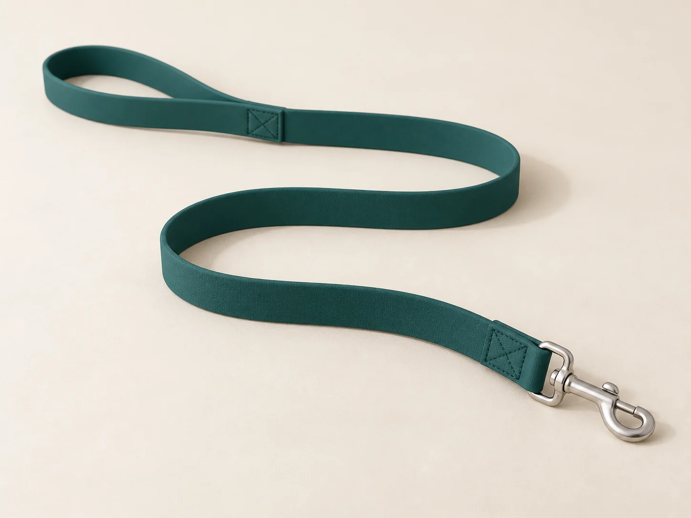
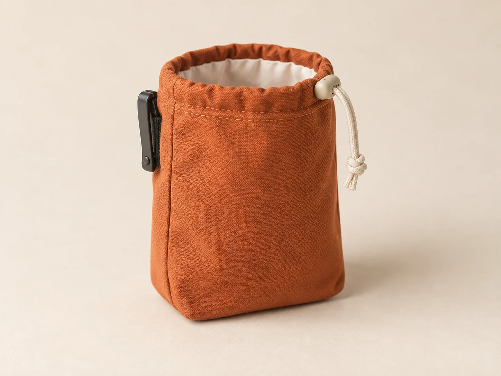
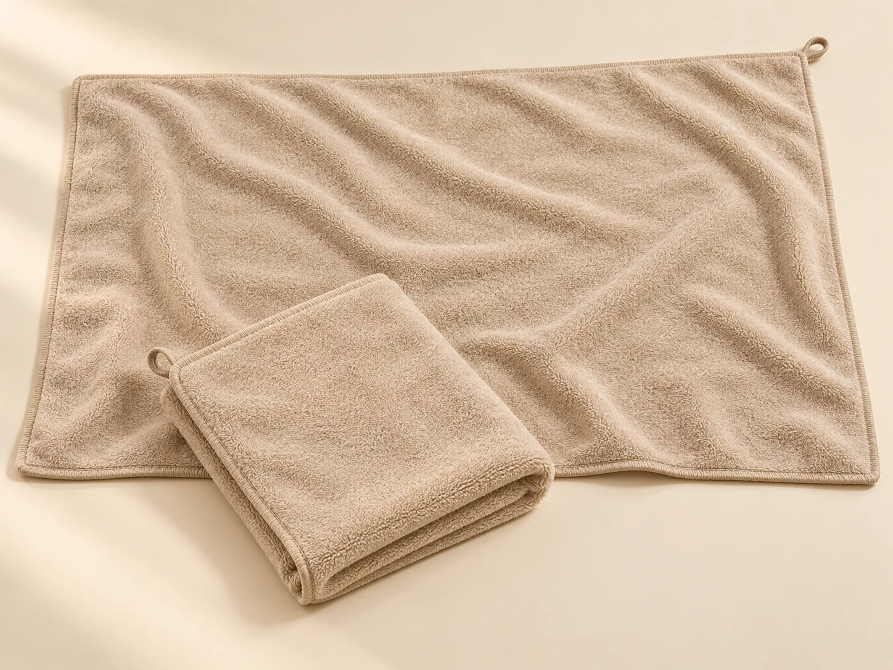

The complete collection
For the walk.
And the way home.
Three pieces with a place in your routine. See every size, material and care note here, then choose what belongs in your kit.

01 / Out the door / Seaweed
Tide leash
A familiar loop in your hand. A fixed length for the way you walk.
Smooth coated webbing, a simple loop handhold and one swivel trigger clip. Choose the shorter length for less spare lead to carry, or the longer length when you prefer more lead in hand. The width stays the same.
- Materials & details
- TPU-coated polyester webbing; silver swivel trigger clip.
- Care after the walk
- Wipe with a damp cloth, or hand wash gently with mild detergent. Rinse and air dry. Check the surface, stitching and clip before every use; stop using damaged gear.
Length is a handling preference, not approval for a dog size or pulling force. This is not retractable, a vehicle restraint, climbing equipment or a training system.
Illustrative CAD item prices. Tax and delivery are not calculated.

02 / Along the way / Rust
Trail treat pouch
A little place for the things that make a walk your own.
A compact canvas pouch with a drawcord opening and a belt clip. The washable lining turns out for cleaning, so yesterday’s crumbs do not have to come on today’s walk. Fill it just before heading out, then empty it when you get home.
- Materials & details
- Cotton-canvas exterior, polyester lining, drawcord and belt clip.
- Care after the walk
- Empty after each walk and turn out loose crumbs. Hand wash gently and air dry fully before refilling.
Treats are not included. This is not a food preservation container or chew toy. Keep it out of your dog’s reach when it is not in use.
Illustrative CAD item prices. Tax and delivery are not calculated.

03 / Back at home / Sand
Home drying towel
For the paws that never quite miss a puddle.
A soft microfibre cloth with bound edges and a small hanging loop. Keep the compact towel by the door or choose the larger surface for a roomier fold around damp paws. Two sizes, one quiet sand colour.
- Materials & details
- Polyester microfibre, bound edges and one fabric hanging loop.
- Care after the walk
- Cold gentle wash without fabric conditioner. Air dry. Use the instructions on a physical care label if they differ.
Size describes the towel surface, not a dog-size fit or drying-time promise. Supervise use; leave the face clear and never restrict movement.
Illustrative CAD item prices. Tax and delivery are not calculated.
A good choice starts with a clear dimension.
Compare lengths and surfaces in our care guide. We do not recommend equipment by breed, weight or pulling force, and a kit selection does not replace checking physical equipment before a walk.
Dimensions & care ↗